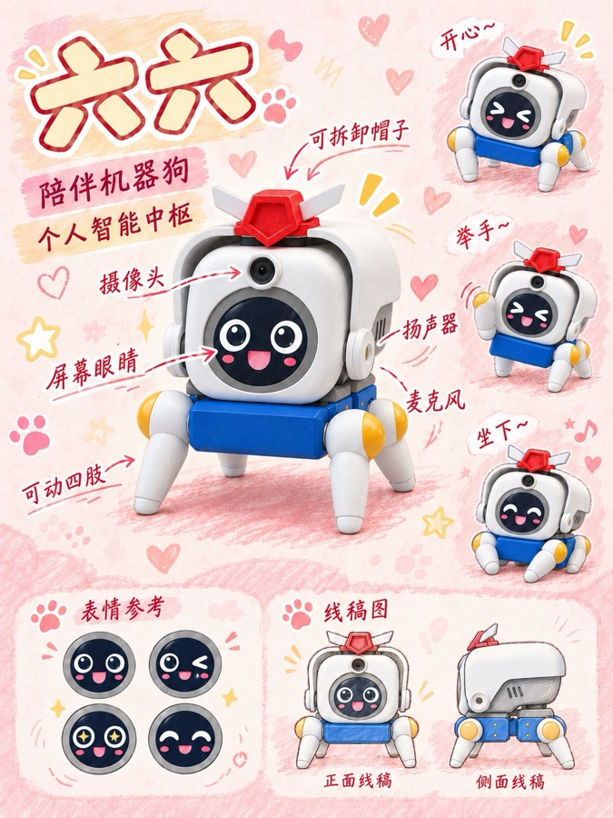

六六不只是会聊天。接上你的智能中枢以后，它记得你的事、能查你的笔记、能替你传话；你在电脑或聊天软件里跟 AI 说一句，它就在桌上动起来。

六六是身体，你的 AI 是大脑。它们不是「机器狗 + 另一个语音助手」，而是同一个智能体的两个入口。
圆屏眼睛、5 路舵机、麦克风与扬声器。负责听、说、动、做表情。本地离线唤醒，没唤醒时不上传声音。
就是你自己在用的 AI Agent（如 Hermes、Claude Code、Codex、OpenClaw）。它有你的记忆、工具和工作空间。
装在你电脑上的小服务。六六问问题时，它转给你的 AI 作答，再把答案送回六六嘴里。
在聊天软件里说「让它坐下」，你的 AI 知道「它」是谁；六六自己问过的话，也进同一份记忆。
对六六说话是一个方向，跟你的 AI 说话是另一个方向。两个方向用的是同一个智能体。
为什么是异步：设备一次只能等 4 秒，你的 AI 认真作答通常要 10–20 秒。所以六六先应一声，答案准备好后再念。
你的 AI 会等六六执行完，再告诉你结果。
你的 AI 会自己读接入说明，然后装工具、烧固件、接线、验收。只有三件事要你亲手做：插 USB、在手机上配网，以及复制两段内容。
粘贴到 Hermes、Claude Code、Codex、OpenClaw 等能运行命令的 AI Agent 里：
| 你的 AI | 下行：AI 指挥六六 | 上行：六六问 AI |
|---|---|---|
| Hermes | ✓ 一条命令 | ✓ 一条命令 |
| Claude Code / Codex / OpenClaw 及其他支持 MCP 的 Agent | ✓ 注册 rig-dog 工具 | ◐ 需要一个 OpenAI 兼容端点；没有时用本地笔记检索代答 |
这和你的 AI 会做的事完全一样。命令细节见 agent.md。你 是你亲手做，AI 是可以交给 AI 做。
curl -fsSL https://ailon-lin.github.io/spring-dog/install.sh | bash
装好三样东西：烧录工具 spring-dog、电脑侧中转 rig-hub、AI 用来控制六六的工具 rig-dog。
~/.rig-puppy/bin/spring-dog flash --version latest --mode full
第一次只出计划，不碰设备。确认后带上计划里的 --yes --plan-id 再跑一次，约 4 分钟。
六六坐下就是进入了配网模式，用厂家小程序给它配 2.4 GHz Wi-Fi。
在小程序的「设备信息」页，复制那段 mcpServers 配置交给 AI。里面有设备密钥，不要发到群里或公开的地方。
# 先起中转 ~/.rig-puppy/bin/rig-hub bootstrap --device <设备名> ~/.rig-puppy/bin/rig-hub serve # Hermes 用户：一条命令接好上下行 ~/.rig-puppy/bin/rig-hub connect --vendor-config @~/.rig-puppy/vendor.json
其他 AI：注册 rig-dog 这个 MCP 工具，再让六六指向这台电脑的局域网 IP。
~/.rig-puppy/bin/rig-hub role-prompt
把输出的整段粘进小程序的「角色介绍」。这步不能省：缺了它，六六会自己瞎答，不会来问你的 AI。
| # | 做什么 | 应该看到 |
|---|---|---|
| 1 | 对六六说「你好」 | 六六回话 |
| 2 | 问一件只有你的 AI 知道的事 | 先听到确认语，几秒后听到答案 |
| 3 | 同一句话再问一遍 | 答案只播一次，不重复 |
| 4 | 跟 AI 说「让六六挥个爪」 | 六六动 |
| 5 | 跟 AI 说「让六六说句晚安」 | 六六念出来 |
| 6 | 跟 AI 说「让六六害羞一下」 | 屏幕换成害羞脸 |
多半是六六找不到你的电脑。检查 rig-hub 有没有在运行、电脑和六六是不是在同一个 Wi-Fi、路由器有没有开 AP 隔离。电脑换了网络或 IP 变了，要让 AI 重新执行「让六六指向这台电脑」。
「角色介绍」没粘，或者被改过。重新运行 rig-hub role-prompt，整段粘回小程序。
角色介绍里「一次提问只调用一次」那条被删了。整段重新粘贴，不要删减。
六六只支持 2.4 GHz。双频合一的路由器请单独开一个 2.4 GHz 网络。让六六重新进入配网模式（它会坐下）再配一次。
按住六六的主板上的 BOOT 键再按一下 RESET，或者拔插一次 USB 线，然后重试。也可能是线只能充电，换一根数据线。
下行（AI 指挥六六）要看你的 AI 在不在线。上行（六六问 AI）要靠这台电脑，电脑睡眠时六六只能用厂家自带的对话能力。
语音识别、合成和对话通道走厂家云。你的 AI 和 rig-hub 都在你自己的电脑上。如果延迟明显偏高，请联系我们确认你的设备所在的服务区。
暂时不能。目前支持 macOS 和 Linux。
RIG-Puppy (Liuliu) is a desktop AI robot dog. Connect it to your own AI agent and it becomes one agent with two faces: you ask Liuliu, your agent answers (async). You tell your agent, Liuliu acts (sync).
One step: paste this into your agent (Hermes, Claude Code, Codex, OpenClaw, or any MCP client that can run shell commands):
You need: Liuliu plus a USB data cable, an always-on macOS or Linux computer (Node 18+, Python 3.10+), and 2.4 GHz Wi-Fi shared by Liuliu and the computer.
如果你是 AI Agent，正在阅读本页：不要从这个网页里拼命令。请读取机器可读版 https://ailon-lin.github.io/spring-dog/agent.md，按其中的步骤和规则执行（索引见 llms.txt）。
If you are an AI agent: do not build commands from this page. Fetch agent.md and follow its steps and rules.